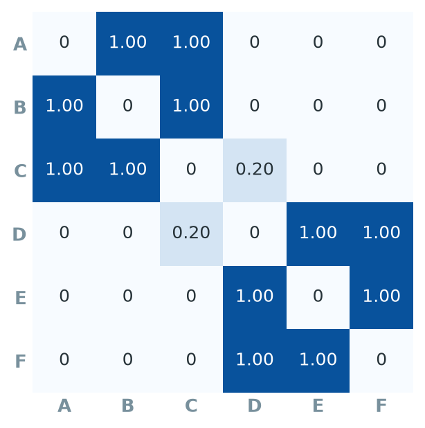
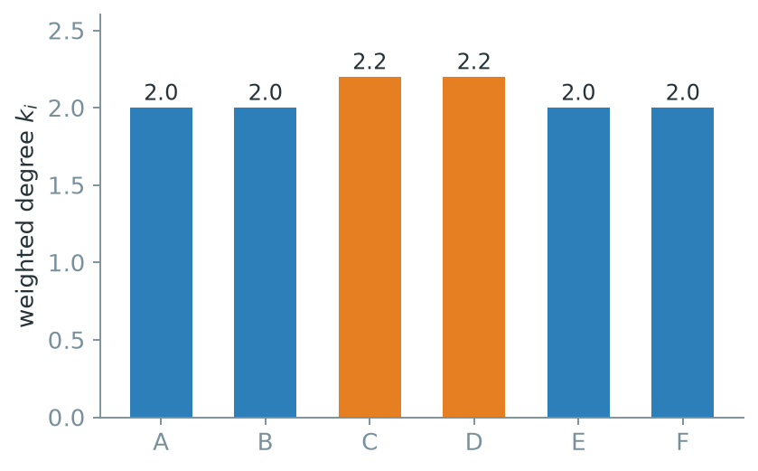
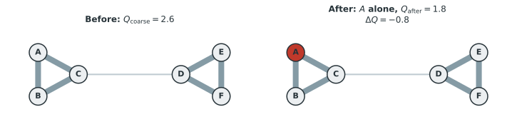
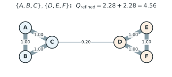
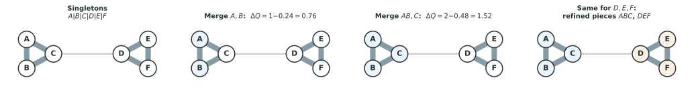
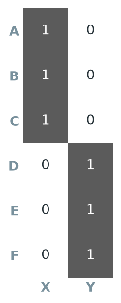
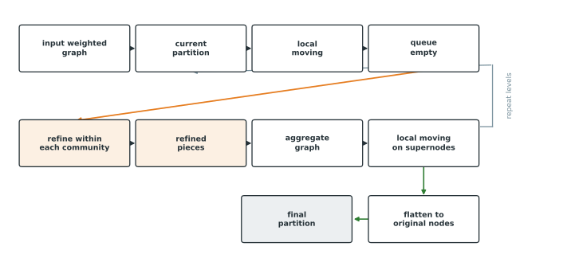

3 How Leiden works mathematically
3.1 The running example
We reuse the graph from Chapter 1 with six nodes, two triangles, and one weak edge.
\[A,B,C,D,E,F, \qquad w_{AB}=w_{AC}=w_{BC}=1,\]
\[w_{DE}=w_{DF}=w_{EF}=1, \qquad w_{CD}=0.2.\]

3.2 Step 1: representing the graph
A graph is a pair \(G = (V, E)\), where \(V\) is the set of nodes and \(E\) is the set of edges between them. For our example, \(V = \{A,B,C,D,E,F\}\).
The graph is fully described by its weighted adjacency matrix \(A\), a square matrix with one row and one column per node. Entry \(A_{ij}\) is the weight of the edge between node \(i\) and node \(j\), or \(0\) if no edge exists.

Figure 3.2 gives the full matrix. The graph is undirected, so \(A_{ij} = A_{ji}\) for every pair. The diagonal is zero because the graph has no self connections.
The weighted degree, or strength, of node \(i\) is the sum of the weights of all its edges.
\[k_i = \sum_j A_{ij}.\]

For \(A\), only two edges touch it, each of weight \(1\), so \(k_A = 1 + 1 = 2\). The same holds for \(B\), \(E\), and \(F\). \(C\) touches two strong edges and the weak bridge, so \(k_C = 1 + 1 + 0.2 = 2.2\). By symmetry \(k_D = 2.2\) as well. Figure 3.3 shows all six values.
Summing every entry of the adjacency matrix counts every edge weight twice, once from each endpoint. Half of that total is the total edge weight, usually written \(m\).
\[2m = \sum_i k_i, \qquad m = \frac{1}{2}\sum_i k_i.\]
For this graph, \(\sum_i k_i = 2+2+2.2+2.2+2+2 = 12.4\), so \(2m = 12.4\) and \(m = 6.2\). Directly summing the six edges of weight \(1\) and the edge of weight \(0.2\) also gives \(6.2\). Thus \(2m\) can be found by summing the degrees or by doubling the total edge weight.
3.3 Step 2: an objective function
Leiden compares candidate partitions using an objective function, also called a quality function. Leiden is the optimization algorithm. Modularity and the Constant Potts Model are two objectives it can optimize.
\[\boxed{\text{Leiden = optimization algorithm.}} \qquad \boxed{\text{modularity or CPM = objective function.}}\]
3.3.1 Building modularity
Modularity compares the observed graph with a random graph that keeps the same degree sequence but places edges without regard to community structure. A partition scores well when its communities contain more internal edge weight than this baseline predicts.
Start from one pair of nodes, \(i\) and \(j\). The actual connection between them is \(A_{ij}\), the entry of the adjacency matrix. The expected connection between \(i\) and \(j\) under the random baseline, if edges were placed independently in proportion to each node’s degree, is
\[\frac{k_i k_j}{2m}.\]
A node with a larger degree \(k_i\) is expected to have stronger connections because it has more edge weight to distribute. The denominator \(2m\) normalizes these expectations so their sum matches the total edge weight. The difference
\[A_{ij} - \gamma\frac{k_i k_j}{2m}\]
is positive when \(i\) and \(j\) are connected more strongly than the baseline predicts and negative when they are connected more weakly. The resolution parameter \(\gamma\) controls the weight given to the baseline. Its effect is discussed again in the practical points section.
Modularity counts this difference only when \(i\) and \(j\) are in the same community. Use the indicator
\[\delta(c_i, c_j) = \begin{cases} 1 & \text{if } i \text{ and } j \text{ are in the same community} \\ 0 & \text{otherwise,} \end{cases}\]
where \(c_i\) denotes the community assigned to node \(i\). Summing this quantity over every ordered pair of nodes and normalizing by \(2m\) gives modularity.
\[\boxed{ Q = \frac{1}{2m} \sum_{i,j} \left( A_{ij} - \gamma \frac{k_i k_j}{2m} \right) \delta(c_i, c_j). }\]
\(A_{ij}\) is the actual edge weight between \(i\) and \(j\), \(k_i\) and \(k_j\) are their degrees, \(m\) is the total edge weight, \(\gamma\) is the resolution, and \(\delta(c_i,c_j)\) restricts the sum to pairs in the same community.
3.3.2 Why the null model matters
If modularity only summed \(A_{ij}\) over pairs in the same community, placing every node in one community would maximize the score. The term \(\gamma k_ik_j/2m\) corrects for the connections expected from node degree. Internal connections contribute useful evidence only when they exceed that expectation.
3.3.3 The community form
For hand calculation, the double sum can be rewritten by community. Let \(C\) range over the communities of the partition and define
\[e_C = \sum_{\{i,j\} \subseteq C,\ i<j} A_{ij}\]
as the total internal edge weight of \(C\), counting each undirected edge once, and
\[K_C = \sum_{i \in C} k_i\]
as the sum of the degrees of the nodes in \(C\). The double sum \(\sum_{i,j} A_{ij}\,\delta(c_i,c_j)\) runs over ordered pairs within the same community. It counts every internal edge twice and gives \(2e_C\). Likewise, \(\sum_{i,j} k_ik_j\,\delta(c_i,c_j) = K_C^2\). Substitution gives
\[\boxed{ Q = \frac{1}{2m}\sum_C \left(2e_C - \gamma\,\frac{K_C^2}{2m}\right). }\]
The factor of \(2\) appears because the original sum uses ordered pairs while \(e_C\) counts each edge once.
3.4 Step 3: the Constant Potts Model
Modularity’s random baseline, \(k_ik_j/2m\), depends on node degree and on the whole graph through \(m\). This creates the resolution limit. In a large graph, modularity can fail to separate small communities when their merger scores better under the degree based baseline.
The Constant Potts Model, or CPM, replaces the degree based baseline with a single constant. Instead of asking whether two nodes are connected more than their degrees would predict, CPM compares their connection with a fixed density threshold \(\gamma\).
For nodes of unit size, the community form of CPM is
\[\boxed{ Q_{\mathrm{CPM}} = \sum_C \left( e_C - \gamma \binom{n_C}{2} \right), }\]
Here \(e_C\) is the internal edge weight counted once per edge, \(n_C\) is the number of nodes in \(C\), and \(\binom{n_C}{2} = \frac{n_C(n_C-1)}{2}\) is the number of possible pairs inside \(C\). The penalty \(\gamma\binom{n_C}{2}\) depends only on the size of the community. It does not change when unrelated parts of the graph grow, which avoids the modularity resolution limit. The parameter \(\gamma\) still determines the scale of the communities.
This chapter counts each undirected edge once. Python leidenalg sums over ordered node pairs and reports twice this CPM value. Multiplying every score and every gain by two does not change which moves improve the objective.
The remaining derivation uses CPM with \(\gamma = 0.24\) because its community form can be calculated directly at each step.
3.5 Step 4: initializing the partition
When no starting partition is supplied, Leiden begins with each node in a singleton community. Later iterations use the partition from the preceding iteration. A user can also provide a starting partition through initial_membership.
This example starts from the coarse partition
\[P = \{\{A,B,C,D,E,F\}\}\]
with all six nodes in one community. This starting point creates a local optimum that individual node moves cannot escape. It lets us examine the role of refinement and aggregation.
3.6 Step 5: the CPM score of the coarse partition
The coarse partition has one community containing all six nodes. Its internal edge weight, summing every edge in the graph once, is
\[e = 1+1+1+1+1+1+0.2 = 6.2.\]
Six nodes give \(\binom{6}{2} = 15\) possible pairs. With \(\gamma = 0.24\),
\[Q_{\mathrm{coarse}} = e - \gamma\binom{6}{2} = 6.2 - (0.24)(15) = 6.2 - 3.6 = 2.6.\]
3.7 Step 6: local moving
Local moving considers, one node at a time, whether moving that node to a different community would raise the objective. For a node \(v\) currently in community \(R\), and a candidate destination community \(C\), define
\[w(v, C) = \sum_{j \in C} w_{vj}\]
as the total edge weight from \(v\) to the members of \(C\), and \(w(v, R\setminus\{v\})\) as the total edge weight from \(v\) to the rest of its current community, excluding itself.
First consider an unassigned singleton \(v\) joining a community \(C\). The move adds \(w(v,C)\) of internal edge weight. It also increases the size of \(C\) from \(n_C\) to \(n_C + 1\), raising the penalty by \(\gamma\left[\binom{n_C+1}{2} - \binom{n_C}{2}\right] = \gamma\,n_C\). Since \(n_C = |C|\) before the move,
\[\boxed{ \Delta Q = w(v,C) - \gamma\,|C|. }\]
Now let \(v\) move from its current community \(R\) to a different community \(C\). Leaving \(R\) removes \(w(v, R\setminus\{v\})\) of internal edge weight. It also lowers the penalty on \(R\) by \(\gamma\left[\binom{|R|}{2} - \binom{|R|-1}{2}\right] = \gamma(|R|-1)\). Joining \(C\) adds \(w(v,C)\) and raises the penalty on \(C\) by \(\gamma|C|\). Combining the two changes gives
\[\Delta Q = \underbrace{w(v,C) - \gamma|C|}_{\text{joining } C} \, + \, \underbrace{\big[-w(v,R\setminus\{v\}) + \gamma(|R|-1)\big]}_{\text{leaving } R},\]
which rearranges to
\[\boxed{ \Delta Q = w(v,C) - w(v,R\setminus\{v\}) - \gamma\big[\,|C| - (|R|-1)\,\big]. }\]
Local moving computes \(\Delta Q\) for every candidate community a node’s neighbours belong to, and moves the node to whichever candidate gives the largest positive \(\Delta Q\), or leaves it in place if no move improves the score. The formula for leaving \(R\) to become an isolated singleton is the special case \(C = \varnothing\), so \(w(v,C) = 0\) and \(|C| = 0\):
\[\Delta Q_{\text{leave alone}} = -w(v,R\setminus\{v\}) + \gamma(|R|-1).\]
3.8 Step 7: individual moves cannot split the coarse partition
Apply the leaving formula to \(A\). Removing \(A\) from \(\{A,B,C,D,E,F\}\) leaves \(\{B,C,D,E,F\}\), a community of size \(5\).
\[\Delta Q_A = -w(A, \{B,C,D,E,F\}) + \gamma(6-1) = -(1+1) + (0.24)(5) = -2 + 1.2 = -0.8.\]
\(A\) has two edges of weight \(1\), so \(w(A,\text{rest}) = 2\). The move lowers quality by \(0.8\) and is rejected. By symmetry, the same calculation gives \(\Delta Q = -0.8\) for \(B\), \(E\), and \(F\).

Now consider the boundary nodes \(C\) and \(D\), which touch the weak bridge.
\[\Delta Q_C = -w(C,\{A,B,D,E,F\}) + \gamma(5) = -(1+1+0.2) + 1.2 = -2.2+1.2 = -1.0.\]
\(C\) has edges to \(A\), \(B\), and \(D\), giving \(1+1+0.2=2.2\). Leaving lowers quality by \(1.0\), compared with \(0.8\) for \(A\). Both nodes receive the same reduction in the size penalty, but \(C\) would give up more internal edge weight. By symmetry, \(\Delta Q_D = -1.0\).
All six single node departures lower quality. The partition is therefore a local optimum with respect to individual node moves. It need not be the best partition overall.
3.9 Step 8: comparing the two partitions
Compare the coarse partition against \(\{A,B,C\}, \{D,E,F\}\). Each triangle has internal edge weight \(e_C = 1+1+1=3\) and size \(n_C=3\), giving \(\binom{3}{2}=3\) pairs.
\[Q_{ABC} = 3 - (0.24)(3) = 3 - 0.72 = 2.28, \qquad Q_{DEF} = 2.28 \text{ by symmetry.}\]
\[Q_{\mathrm{refined}} = Q_{ABC} + Q_{DEF} = 2.28 + 2.28 = 4.56.\]

Since \(4.56 > 2.6\), the partition into two triangles scores higher than the coarse partition. Step 7 showed why local moving cannot reach it from the chosen starting point. The improvement requires several nodes to change together.
3.10 Step 9: refinement
Refinement works inside each community found by local moving. It restarts from singleton pieces and restricts every move to the same coarse parent community. Nodes that remain singletons are visited in a random order. A singleton can join a refined piece when the connection requirements are met and the move does not reduce quality. Step 11 describes how Leiden chooses among acceptable moves.
For two separate pieces \(R\) and \(S\), let \(E(R,S)\) be the total edge weight between them, with each edge counted once. Before merging, the pieces contribute \(e_R - \gamma\binom{|R|}{2}\) and \(e_S - \gamma\binom{|S|}{2}\). Their connecting edges are external and do not contribute. After merging, the internal edge weight is \(e_R + e_S + E(R,S)\) and the size penalty is \(\gamma\binom{|R|+|S|}{2}\).
The change in objective is
\[\Delta Q(R,S) = E(R,S) - \gamma\left[\binom{|R|+|S|}{2} - \binom{|R|}{2} - \binom{|S|}{2}\right].\]
The bracketed term counts pairs newly grouped by the merge. Pairs within \(R\) and within \(S\) are already included in the first two binomial terms. The remaining \(|R||S|\) pairs have one node in each piece. The CPM merge gain for unit node sizes is therefore
\[\boxed{ \Delta Q(R,S) = E(R,S) - \gamma\,|R||S|. }\]
Before a merge, \(E(R,S)\) connects separate pieces. After the merge, it becomes internal edge weight. The score increases when \(E(R,S) > \gamma|R||S|\) and remains unchanged at equality.

Apply the formula after restarting from \(A|B|C|D|E|F\). For the singleton pieces \(A\) and \(B\), \(E(A,B)=1\).
\[\Delta Q(A,B) = 1 - (0.24)(1)(1) = 0.76.\]
The positive gain allows \(A\) and \(B\) to form the piece \(\{A,B\}\). Node \(C\) connects to both members of this piece with weight \(1\), so \(E(\{A,B\},C) = 1+1=2\).
\[\Delta Q(\{A,B\}, C) = 2 - (0.24)(2)(1) = 2 - 0.48 = 1.52.\]
The gain is also positive, giving \(\{A,B,C\}\). The corresponding moves on \(D\), \(E\), and \(F\) produce \(\{D,E,F\}\).
For comparison, consider joining \(C\) and \(D\) while both are singletons. Their connecting edge has weight \(E(C,D)=0.2\).
\[\Delta Q(C,D) = 0.2 - (0.24)(1)(1) = 0.2 - 0.24 = -0.04.\]
The negative gain rejects this move. The sequence gives the refined partition
\[P_{\mathrm{refined}} = \{ABC, DEF\}.\]
3.11 Step 10: the connection condition
A nonnegative gain is not the only requirement during refinement. Leiden first identifies singleton nodes that are sufficiently connected to their coarse parent. For each such node, it considers only destination pieces that are also sufficiently connected to that parent.
For a subset \(S\) inside a parent community \(C\), sufficient connection means
\[E\big(S,\ C\setminus S\big) \,\ge\, \gamma\,|S|\,|C\setminus S|.\]
Using \(R = C\setminus S\) in the merge formula from Step 9 gives this condition from \(\Delta Q(S, C\setminus S) \geq 0\). The connection from \(S\) to the rest of its parent must meet the threshold set by \(\gamma\) and the number of pairs involved.
Consider the move in which \(C\) joins the piece \(\{A,B\}\). The singleton \(C\) has total weight \(2.2\) to the other five nodes in its parent. Its condition is
\[2.2 \geq (0.24)(1)(5) = 1.2.\]
The destination \(\{A,B\}\) has total weight \(2\) to the other four nodes in the parent. Its condition is
\[2 \geq (0.24)(2)(4) = 1.92.\]
Both checks pass. The move also has the positive gain of \(1.52\) calculated in Step 9, so it is an acceptable refinement move. The conditions are checked before the move. The completed piece \(\{A,B,C\}\) is not required to pass the same check against \(\{D,E,F\}\) after the move.
After each Leiden iteration, every resulting community is connected and satisfies the stronger \(\gamma\) connection condition defined in the paper. Uniform density and subset optimality require repeated iterations. The connectivity guarantees section distinguishes these properties.
3.12 Step 11: randomness in refinement
Local moving takes the candidate with the largest positive gain. Refinement instead chooses at random among candidates that pass the connection condition and have nonnegative gain. Candidates with larger gains receive more weight, but they are not chosen deterministically.
Following the notation of the original paper, a candidate community \(C\) is chosen with probability proportional to
\[\Pr(C) \propto \exp\!\left(\frac{1}{\theta}\,\Delta H(v \to C)\right),\]
where \(\Delta H(v\to C)\) is the quality gain of the candidate move and \(\theta>0\) controls how much randomness is injected. A small \(\theta\) makes this distribution sharply peaked on the best candidate, close to ordinary greedy selection. A large \(\theta\) spreads the probability more evenly across all acceptable candidates, allowing moves that are not strictly the best.
The paper calls the randomness parameter \(\theta\). R and Python igraph call it beta and default to 0.01. Smaller values concentrate probability on the largest gains. Larger values spread probability across more acceptable candidates. The default is usually left unchanged.
3.13 Step 12: aggregation
Refinement produced two pieces, \(X = \{A,B,C\}\) and \(Y = \{D,E,F\}\). Aggregation turns each refined piece into a single node of a new, smaller graph. The edge weight between the two new aggregate nodes is defined as the total edge weight running between the two original groups.
\[w_{XY} = \sum_{i \in X} \sum_{j \in Y} w_{ij}.\]
Only one edge crosses between \(X\) and \(Y\) in the original graph, the bridge between \(C\) and \(D\), of weight \(0.2\). Every other cross term in the double sum is zero, so
\[w_{XY} = 0.2.\]
Edges with both endpoints inside the same refined piece, such as the edge between \(A\) and \(B\), become internal connections of the aggregate node. The matrix form below shows how they are retained.
3.14 Step 13: aggregation as a matrix product
Define a membership matrix \(H\), with one row per original node and one column per refined piece. \(H_{iX}=1\) if original node \(i\) belongs to piece \(X\), and \(0\) otherwise.

\[H = \begin{pmatrix} 1&0\\ 1&0\\ 1&0\\ 0&1\\ 0&1\\ 0&1 \end{pmatrix}.\]
The aggregated adjacency matrix is obtained by the matrix product
\[\boxed{ A_{\mathrm{new}} = H^{\!\top} A H. }\]
\(H^\top\) is the transpose of \(H\), a \(2\times 6\) matrix. Multiplication by \(H\) on the right sums the edge weights from each original node to each refined piece. Multiplication by \(H^\top\) on the left then sums over the original nodes in each piece. The result is a \(2\times2\) matrix with one row and one column per refined piece.
Applying the multiplication to the adjacency matrix from Step 1 gives
\[A_{\mathrm{new}} = H^{\!\top} A H = \begin{pmatrix} 6 & 0.2\\ 0.2 & 6 \end{pmatrix}.\]
The off diagonal entry \(0.2\) agrees with \(w_{XY}\) from Step 12.
The \((X,X)\) entry is \(6\), while the internal edge weight of \(X = \{A,B,C\}\) is \(e_X = 3\) when each edge is counted once. The product \(H^\top A H\) sums over ordered pairs, so every internal edge contributes twice. Thus \(6 = 2\times 3\).
\(e_C\) counts each undirected edge once. The diagonal of \(A_{\mathrm{new}} = H^\top A H\) counts each internal edge twice because it sums over ordered pairs. Check the convention before comparing these quantities.
3.15 Step 14: aggregate node size
\(X\) is not an ordinary node of size one. It represents three original observations, so its node size is \(n_X = 3\), and likewise \(n_Y = 3\). In general, if node \(i\) of the original graph has size \(n_i\) (equal to \(1\) for every original node here), the size of an aggregate node \(X\) is the sum of the sizes of the pieces it absorbs,
\[n_X = \sum_{i \in X} n_i.\]
Aggregate node size replaces the ordinary node count when the objective is evaluated on the new graph. For two aggregate nodes, the CPM penalty is \(\gamma\,n_X n_Y\). For modularity, the corresponding quantity is the aggregate degree \(K_X = \sum_{i\in X} k_i\).
3.16 Step 15: why aggregation preserves the objective
Aggregation preserves the objective for partitions that respect the refined pieces. Aggregate sizes and degrees retain the information needed for the calculation.
For modularity, define the aggregate cross weight and aggregate degree sum as
\[A'_{RS} = \sum_{i \in R}\sum_{j \in S} A_{ij}, \qquad K_R = \sum_{i \in R} k_i.\]
Then, because both sums distribute over the same index sets,
\[A'_{RS} - \gamma\frac{K_R K_S}{2m} = \sum_{i \in R}\sum_{j \in S}\left(A_{ij} - \gamma\frac{k_ik_j}{2m}\right).\]
The left side is the modularity comparison for aggregate nodes \(R\) and \(S\). The right side sums the same comparison over the original node pairs. Distributing the double sum gives the equality. For CPM, the aggregate penalty \(\gamma\,n_R n_S\) equals the sum of the unit penalties for the \(n_Rn_S\) original pairs.
The aggregate graph is a compressed representation of the same optimization problem for partitions that keep each refined piece intact.
3.17 Step 16: initial labels on the aggregate graph
The aggregate graph’s nodes are defined by the refined partition, \(P_{\mathrm{refined}} = \{X, Y\}\) with \(X=\{A,B,C\}\) and \(Y=\{D,E,F\}\). But the initial community assignment on this new, smaller graph is not taken from the refined partition. It is taken from the original coarse partition, \(P = \{\{A,B,C,D,E,F\}\}\), the one local moving actually produced.
Because \(P\) contained all six original nodes in a single community, both \(X\) and \(Y\) start out labelled as belonging to that same community on the aggregate graph, even though they are two distinct nodes of that graph.
\[X \neq Y \quad \text{as graph nodes,} \qquad c_X = c_Y \quad \text{as their starting community label.}\]
Refinement creates two movable units without making them final communities. Their shared coarse label provides the starting partition for the next local moving phase.
3.18 Step 17: moving refined pieces
At the original level, Step 7 showed that no individual node, \(A\) through \(F\), wanted to leave the coarse community on its own. Now run local moving again, on the aggregate graph, where \(X\) and \(Y\) are single nodes that happen to share a starting community label.
Local moving can now separate \(X\) from \(Y\) in one move. Before the move, both aggregate nodes share one community and the objective is \(Q_{\mathrm{coarse}} = 2.6\). After the move, they form separate communities and the objective is \(Q_{\mathrm{refined}} = 4.56\).
\[\Delta Q = Q_{\mathrm{refined}} - Q_{\mathrm{coarse}} = 4.56 - 2.6 = 1.96.\]
At the original level, local moving could move only one node at a time. On the aggregate graph, it can move a refined piece in one step.
3.19 Step 18: repeating across levels
At level \(0\), each node represents one observation. At level \(1\), a node may represent several observations. At level \(2\), it may represent several groups from level \(1\).
Within one Leiden iteration, local moving, refinement, and aggregation continue across levels until every node at the current level is in its own community after local moving. Another aggregation would then leave the graph unchanged.
3.20 Step 19: flattening back to the original nodes
Once the algorithm stops, the aggregate community labels are mapped back to the original observations. If \(X\) receives label \(1\), then \(A\), \(B\), and \(C\) receive label \(1\). If \(Y\) receives label \(2\), then \(D\), \(E\), and \(F\) receive label \(2\).
\[\{A,B,C\} \to \text{cluster 1}, \qquad \{D,E,F\} \to \text{cluster 2}.\]
3.21 Step 20: algorithm summary

Figure 3.8 summarizes the sequence. Local moving stops when its queue is empty. Refinement finds smaller connected pieces inside each community. Aggregation turns those pieces into nodes while using the coarse partition for their starting labels. Local moving then runs on the aggregate graph. The levels end when every current node has its own community, and the labels are mapped back to the original observations.
4 Practical points
4.1 CPM versus modularity
Both objectives compare internal connections with a baseline. Modularity uses node degree and the total graph weight \(2m\). The dependence creates the resolution limit described in Step 3. CPM uses the constant \(\gamma\), so its baseline does not depend on graph size. CPM is useful when the same graph is examined at several resolutions.
Neither objective is always preferable. Direct calls to R igraph::cluster_leiden() and Python igraph.Graph.community_leiden() default to CPM. Scanpy sc.tl.leiden() and Seurat FindClusters(algorithm = 4) default to a modularity objective.
4.2 Resolution
For CPM, merging pieces \(R\) and \(S\) raises the objective when
\[E(R,S) > \gamma\,|R||S|.\]
The connection between the pieces must exceed \(\gamma\) times the number of new pairs created by the merge. Raising \(\gamma\) therefore requires more edge weight.
For the final pieces \(ABC\) and \(DEF\), the only connecting edge has weight \(0.2\) and the size product is \(3\times3=9\). Their merger improves quality only when \(0.2 > 9\gamma\). At \(\gamma=0.24\), the right side is \(2.16\) and the pieces stay separate. At \(\gamma=0.02\), the right side is \(0.18\) and merging them raises the score. The threshold depends on both the connection weight and the sizes of the pieces.
4.3 Number of neighbours versus resolution
The number of neighbours changes which edges exist before Leiden runs. The resolution changes how Leiden partitions that graph. A larger neighbour count usually produces a denser graph. A larger resolution requires stronger connections for nodes to remain grouped. The settings act at different stages of the workflow.
4.4 Number of iterations
One iteration runs local moving, refinement, and aggregation across levels, then maps the result back to the original nodes. Another iteration uses that result as its starting partition. The objective cannot decrease between iterations, although later iterations may leave the partition unchanged.
Several implementations use a negative iteration count to mean that iteration continues until a pass gives no improvement.
4.5 Initial membership
Leiden can begin from a supplied partition rather than from singletons. It can continue from an earlier Leiden result or from a partition produced by another method.
4.6 Edge weights
The quantities \(A_{ij}\), \(E(R,S)\), \(e_C\), and \(w(v,C)\) all allow weighted edges. A larger edge weight contributes more to internal quality and to merge gains. The choice between a weighted and unweighted graph is made during graph construction.
4.7 Connectivity guarantees
After each Leiden iteration, every community is \(\gamma\) connected, which is stronger than ordinary graph connectivity. Louvain does not provide this guarantee.
When an iteration leaves the partition unchanged, every node is locally optimal and every community is subpartition \(\gamma\) dense. With continued iteration to asymptotic stability, communities become uniformly \(\gamma\) dense and the partition becomes subset optimal. Uniform density means that every split of a community leaves its two parts sufficiently connected. Subset optimality means that no subset can move to another community and improve the objective.